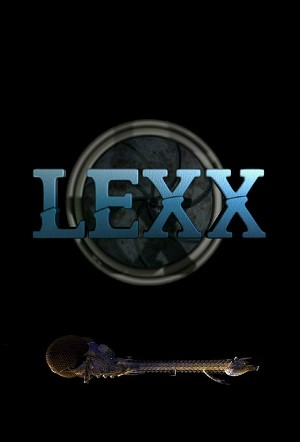

Lexx (1997)
ActionAdventureComedyDramaFantasyScience Fiction
| Year | 1997 |
|---|---|
| Rating | TV-MA |
| Status | Completed |
| Seasons | 5 |
| Episodes | 62 |
| Genre | Action, Adventure, Comedy, Drama, Fantasy, Science Fiction |
I am Kai, last of the Brunnen-G. Millennia ago, the Brunnen-G led humanity to victory in the war against the insect civilization. The Time Prophet predicted that I would be the one to destroy the divine order in the league of the 20,000 planets. Someday that will happen, but not today. Because today is my day of death. The day our story begins. A cowardly security guard, an undead assassin, a female with a body designed for sex and a robot head madly in love with her all make up the crew of the spaceship Lexx, the most powerful weapon in the two universes.
Episodes
Specials
| # | Title | Air Date | Synopsis |
|---|---|---|---|
| 1 | Rated Lexx | 2000-01-07 |
Season 1
Stan, Zev and Kai accidentally steal the Lexx, the most powerful weapon of destruction in the two universes. After successfully fleeing from the Cluster, the main planet of the League of the 20,000 Planets, they are looking for a new home.
Kai needs protoblood to live outside of his cryochamber. Looking for protoblood, the Lexx returns to the Cluster to learn that a huge insect survived. This insect had controlled The Divine Order and His Divine Shadow in order to eat all human inhabitants of the 20,000 planets. The insect then begins a metamorphosis into the Gigashadow. Gigashadow produces protoblood. With the help of Zev, Kai manages to fill up his store of protoblood. Kai places the cluster lizard Squish in the brain of the insect and thus is able to destroy it.
| # | Title | Air Date | Synopsis |
|---|---|---|---|
| 1 | I Worship His Shadow | 1997-04-18 | On Cluster, the capital of the league of 20 000 planets, a ship with the power to destroy planets lies waiting for it's master - "His Divine Shadow". But the soon to be executed rebel Thodin has his eyes on it too, and m |
| 2 | Super Nova | 1997-04-25 | Zev decides they should go to Brunnis, the original home of the Brunnen-G, in hopes of finding something that can prolong Kai's life. When they arrive they find it barren, except from holographic messages left by the ecc |
| 3 | Eating Pattern | 1997-09-04 | The Lexx is forced to land on a planet to eat and replenish its energy supply. While they wait, Stanley and Zev go outside to bury Kai, who seems to have run out of the protoblood that kept him functioning. On their way |
| 4 | Giga Shadow | 1997-09-11 | Kai is running out of protoblood, and a desperate Zev forces Stan to set course back to the Cluster through the fractal core. When they arrive they find they entire planet barren - everybody killed in "the cleansing", in |
Season 2
The main conflict of the second season is the fight against Mantrid, the former Bio-Vizier of His Divine Shadow. The crew had inadvertently helped him transfer his mind into a machine in the first episode of the season while accidentally fusing it with a remnant of His Shadow. Mantrid's goal is to transform all matter in the Light Universe into Mantrid Drones.
In the meantime the crew keeps getting into difficult situations and is usually rescued by Kai. At the end of the season they destroy Mantrid. Unfortunately, the Light Universe is also destroyed. The crew flees into the Dark Zone.
| # | Title | Air Date | Synopsis |
|---|---|---|---|
| 1 | Mantrid | 1998-12-11 | Possessed by remnants of His Shadow, Kai convinces Stanley to return to the ruins of Cluster in the Light universe to search for more protoblood. They find insect larva, but it is dormant and can't produce protoblood. So |
| 2 | Terminal | 1998-12-18 | Stanley messes up the cryo-stasis revival procedure, and Kai reverts back to His Shadow's assassin for a moment, puncturing Stanley's heart. With Stanley in stasis they locate an orbital medical facility, though without |
| 3 | Lyekka | 1998-12-25 | As Stanley wakes from a dream, he finds a beautiful female bearing a startling similarity to someone he used to know next to him. Just as he and Kai are trying to figure out what make of her, they make first contact with |
| 4 | Luvliner | 1999-01-01 | The Lexx intercepts a transmission from the Luvliner sex-satellite, and Stanley steers the Lexx towards it - eager to finally get some "action". But when they arrive, things aren't exactly as advertised. |
| 5 | Lafftrak | 1999-01-08 | Xev demand they investigate an abandoned world, still transmitting TV signals. The computer host offers them parts in different TV shows, though they had better get good ratings or they'll end up canceled... |
| 6 | Stan's Trial | 1999-01-15 | Stanley is captured aboard a pleasure transport by the committee of justice for the 94 reformed planets - and charged with the murder of 685 billion people. |
| 7 | Love Grows | 1999-01-22 | The Lexx intercepts the porn-flick a nearby space transport is running as entertainment, and Stanley orders the ship to head for the source - believing it to be an actual distress signal. But when they arrive, they find |
| 8 | White Trash | 1999-01-29 | Stanley discovers much to his dismay that they aren't alone on the Lexx. A family of hillbilly farmers has been living there in hiding, and decides to seize control of the ship and return to their home planet. |
| 9 | 791 | 1999-02-05 | The Lexx is forced to respond to an emergency signal on a nearby planet, when Lyekka awakes - hungry. They find a crashed ship, seemingly empty except for a cyborg body (which 790 decides to make his own). |
| 10 | Wake the Dead | 1999-02-12 | The Lexx takes aboard 5 youths in who've drifted in space for 300 years in cryo-stasis. With nothing better to do they decide to party, until one of them corrupts Kai's programming, turning him into a psychopathic killer |
| 11 | Nook | 1999-02-19 | Xev starts quite a commotion when the Lexx lands on a planet inhabited only an order of monks, none of whom have ever seen a woman before... |
| 12 | Norb | 1999-02-26 | Norb is found floating alone in space, nearly out of oxygen he is taken aboard. To their horror, it turns out he has been modified by Mantrid, and releases a handful of drones who begin tearing the ship apart, building n |
| 13 | Twilight | 1999-03-05 | The Lexx is forced to land on a mysterious planet to seek help when Stanley collapses. Unfortunately, the place has a strange effect on the dead, as Kai goes off on his own reciting poetry, while the corpses buried nearb |
| 14 | Patches in the Sky | 1999-03-12 | Stanley is trapped inside a nightmare after entering a dream-enhancing machine. Meanwhile it's proprietor discovers that the destruction caused by Mantrid's drones has reached a galactic level. |
| 15 | Woz | 1999-03-19 | When 790 reluctantly reveals that Xev has a built-in expiry date that's soon up, the Lexx heads to the planet Woz where the only remaining love-slave transformation device is. |
| 16 | The Web (1) | 1999-03-26 | As Mantrid is eating up the universe with exponentially increasing speed, Kai sees the Lexx's only option as traveling to the center of the universe, hoping to discover a remaining portal to the Dark Zone. But on their w |
| 17 | The Net (2) | 1999-04-02 | The Lexx is captured by a web-like organism that tries to devour it. The creature takes control over Stanley, using him to fool the others into thinking that the danger is over. |
| 18 | Brigadoom | 1999-04-09 | As the Lexx approaches the centre of the universe a strange building appears out of nowhere... with the Brunnen-G battle song emanating from within. Going inside, the crew discovers a theatre troupe performing the histor |
| 19 | Brizon | 1999-04-16 | Stanley's broadcast for help against Mantrid brings them in contact with Brizon, designer of the Lexx and Mantrid's teacher. He claims he can shut down the drones, but can he be trusted? |
| 20 | End of the Universe | 1999-04-23 | With only hours to go before Mantrid has demolished the universe, Stanley comes up with the idea of creating their own army of drones based on 790 to combat Mantrid's. But is it too little too late? |
Season 3
The Lexx is running out of food and must fly slowly to conserve energy. 790 computes that it might take thousands of years to reach an inhabited planet. The crew enters cryostasis to survive the voyage. After 4,000 years in cryostasis, they reach the twin planets Fire and Water. The entire third season takes place on these two planets.
The crew meets people they knew from the Light Universe. These survivors cannot remember their past in the parallel universe, though their personalities are still the same. Fire is ruled by the charismatic Prince. Water doesn't seem to have a ruler. The inhabitants of both planets live in isolated towns. On Water they live on islands in a huge ocean and on Fire, there are massive towers separated by long stretches of desert.
| # | Title | Air Date | Synopsis |
|---|---|---|---|
| 1 | Fire and Water | 2000-02-06 | Out of fuel, the crew of the Lexx has no other choice than to enter stasis while the Lexx drifts through space - looking for something to eat. 4000 years later, Stan and Xev find themselves awakened by the mysterious and |
| 2 | May | 2000-02-13 | Stanley is rescued from beheading in the nick of time, when Prince learns that Stan is the key to his victory over Water. Meanwhile, Kai crashes down on Water and encounters May - the sole survivor of her city who have b |
| 3 | Gametown | 2000-02-20 | While Kai goes down to Water with a swarm of Moths to find food for the Lexx, Stanley struggles with Prince's proposition - blow up Water, or May dies again. |
| 4 | Boomtown | 2000-02-27 | Gametown is attacked by Duke's forces in the stolen moths, though Kai manages to take back one and return to the Lexx with Bunny. Trying once more to go down to Water for food, Stanley decides they should go to Boomtown |
| 5 | Gondola | 2000-03-05 | With their moth damaged in the battle with Duke's forces, Stanley, Kai and Xev are stranded together with the living Kai and Bunny on the deserts of Fire. They find an abandoned balloon, but it does not have enough fuel |
| 6 | K-Town | 2000-03-12 | Xev and Stan find their way into the towering city they landed on, but discover the inhabitants aren't exactly the friendliest or sanest around... |
| 7 | Tunnels | 2000-03-19 | Kai, still disabled, is taken away to bureaucrat hell for an adjudication. Meanwhile, Stanley and Xev follow Prince underground, hoping that he will lead them though the maze of tunnels to where Kai is. |
| 8 | The Key | 2000-03-26 | Back on the Lexx, Stanley deices blowing up Fire and having the ship eat the debris would be the easiest way to it up an running again, and orders it to fire the next time it is pointed towards the planet. Xev demands St |
| 9 | Garden | 2000-04-02 | Stanley starts to consider settling on Water, doubting that the dark universe holds anything better. When they go down to the planet looking for food, he finds the town Garden to be a promising candidate for permanent re |
| 10 | Battle | 2000-04-09 | Prince's forces attack Garden, and kidnap Xev. Stan and Kai hijack one of their crafts and take up pursuit. But the enemy starts to manoeuvre in place above them, firing arrows to puncture their balloon. |
| 11 | Girltown | 2000-04-16 | Xev's tracks lead to Girltown, and Kai goes in to look for her, while Stan waits outside - where he manages to get himself captured. There he meets Queen, who quite literally wants his body... |
| 12 | The Beach | 2000-04-23 | Stan and Kai crash down on Water. Kai starts to sink towards the centre of the planet, while Stan drowns. The security guard is awakened on a beach by Prince, who tells him he now has to account for his life - prove that |
| 13 | Heaven & Hell | 2000-04-30 | Xev and Kai go to Fire to confront Prince about Stanley's life essence. When he refuses to give it up, Kai jumps down into a well to the planet's core hoping to retrieve it. He winds up on the beach, with Prince taunting |
Season 4
The Lexx travels to Earth looking for food. It is located in the very center of the Dark Universe and the crew assumes that it must be a very dangerous place. The crew again meet people they knew from the Light Universe, and from Fire and Water. Only Prince and Priest are able to remember their lives on Fire.
The Earth is threatened by a being who resembles Lyekka. The crew finds out that the fake "Lyekka" destroyed all human life on her way through the Dark Zone. Kai decides to destroy the asteroid that is the source of the entity. Prince keeps his promise and restores Kai's mortality.
| # | Title | Air Date | Synopsis |
|---|---|---|---|
| 1 | Little Blue Planet | 2001-07-13 | In the near future, an alien spaceship is discovered orbiting the moon. At the urging of his top advisor, Prince, the president of the USA makes contact in secret with the aliens' leader: A strange man who introduces him |
| 2 | Texx Lexx | 2001-07-20 | Kai and Xev are separated when their moth crashes on Earth. The loveslave ts picked up by a lovestruck Texan who proposes to her, while Kai gets mixed up with a group of UFOlogists while searching for her. Stanley gets a |
| 3 | P4X | 2001-07-27 | Xev is forced to adapt to life in prison, and Prince decides it's time for Stan to give him the key to the Lexx. Meanwhile, a new threat arrives from space - an army of carrot-like mechanical drones that start to devour |
| 4 | Stan Down | 2001-08-03 | After being encouraged to stand up to Prince by the First Lady, the President makes a deal with Stan, and frees him from the ATF compound so he can kill Prince with the Lexx. However, it doesn't take long for Prince to f |
| 5 | Xevivor | 2001-08-10 | Prince and 790 lure Stan and Xev back to Earth using the reality show Xevivor, where 10 males compete for a night with Xev, as bait. |
| 6 | The Rock | 2001-08-17 | Discovering that they're flying right over Newfoundland, Stan decides it's time to pay his subjects a little visit. Unfourtunatly, none of the inhabitants seem particularly impressed by his presiential decree, and instea |
| 7 | Walpurgis Night | 2001-08-24 | Going to Transylvania to check up on Kai's lead, they are all invited to dine at Lord Dracul's table for the Walpurgis Night feast. |
| 8 | Vlad | 2001-09-07 | They're back on the Lexx, but Stanley is under the witches' spell, who want Kai's protoblood for their master. |
| 9 | Fluff Daddy | 2001-09-14 | Stanly discovers that a woman bearing an uncanny resemblance to Lyekka is working in the porn industry, and decides to seek her out at the latest shoot. Xev starts acting strangely and having blackouts. |
| 10 | Magic Baby | 2001-09-28 | Trying to get back on the Lexx, Stan, Xev and Kai run across two druids who recognize them as holy figures. Promising to accompany the druids to a religious ceremony, Stan and the others are transported to the space shut |
| 11 | A Midsummer's Nightmare | 2002-01-25 | Kai and Stanley seek out the "Feast of Mograth", hoping to resurrect Xev. There they meet Oberon, king of the faeries, who grants their request... But in return demands their eternal servitude unless they can escape his |
| 12 | Bad Carrot | 2002-02-01 | As the alien carrot probes start to infest more and more of the planet, Prince sees his best option to escape up to the Lexx. Unfortunately, one of the killer vegetables follows him up there... |
| 13 | 769 | 2002-02-08 | In order to get a lead on the whereabouts of the key, Prince goes along with a rather twisted plan cooked up by 790. |
| 14 | Prime Ridge | 2002-02-15 | Without the key the Lexx can't do anything, so Stan and Xev decide to settle on Earth. They pick the quiet country town of "Prime Ridge", but soon manage to stir up trouble. |
| 15 | Mort | 2002-02-22 | Wanted for murder, and the whole area swarming with police and FBI, Stan, Xev and Kai seek refuge in "Mort's Funeral Parlor". Mort takes an unusual interest in Kai's protoblood, hoping it can bring back to life his one t |
| 16 | Moss | 2002-03-01 | While the president finds himself haunted by Prince in the form of a TV set, Stan, Xev and Kai are abducted by Field Commander Moss, leader of the American Freedom Rangers, a para-military group devoted to freeing the Am |
| 17 | Dutch Treat | 2002-03-08 | As the Lexx's hunger becomes critical, it starts to slowly digest itself. Hoping for an alternative way off the Earth, Xev contacts Doctor Longbore, getting permission to join him on the space ship. This does however le |
| 18 | The Game | 2002-03-15 | About to be destroyed, Prince requests Kai complete their game of chess, but with this time with real stakes. Should the undead assassin win, he'll get his life-essence back. Should he loose, Stan and Xev's lives are for |
| 19 | Haley's Comet | 2002-03-22 | The Lexx crew encounter a space capsule filled with a bunch of politically motivated twenty-year-olds (Haley, Amber, Ryan, Josh). They claim that they have gone up in space with the intention of transmitting a message to |
| 20 | ApocaLexx Now | 2002-03-29 | An asteroid mothership appears out of the blackness of space. A metal hatch opens and a tadpole-like creature shoots out and heads for the Lexx. Stan awakens from a nightmare in which he was eaten by Lyekka and discovers |
| 21 | Viva Lexx Vegas | 2002-04-05 | Kai, Xev and Stan stop off in Las Vegas as they wait for a space shuttle that Priest is arranging for them. Without a moth, the shuttle is their only means of returning to the Lexx. They check in at the King Tut, an Egyp |
| 22 | Trip | 2002-04-12 | As the Lexx flies away from Earth toward a new planet, the crew discovers a strange organic bulb on the galley counter. The bulb opens and reveals two round berries and a small potted plant. A holographic image of Lyekka |
| 23 | Lyekka vs. Japan | 2002-04-19 | A huge alien asteroid mothership plummets to Earth and crashes into the Pacific ocean, causing a great disturbance off the coast of Japan. Inside, Lyekka prepares to devour "Japaneseland". Kai and Xev take a moth down to |
| 24 | Yo Way Yo | 2002-04-26 | Prince visits the Lexx warning of "Earth's date with destiny". Emotions abound as Kai begins to feel again and the Lexx's health is ailing. As the alien mother ship has reached Earth. |